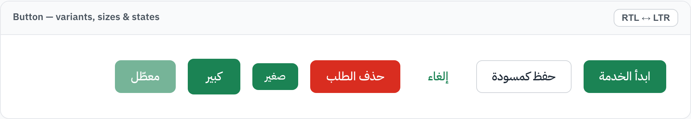
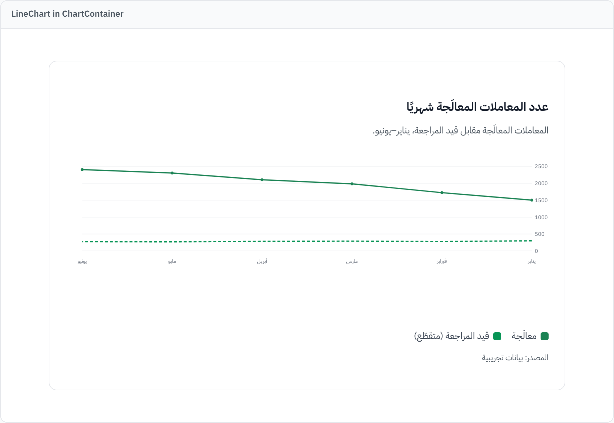
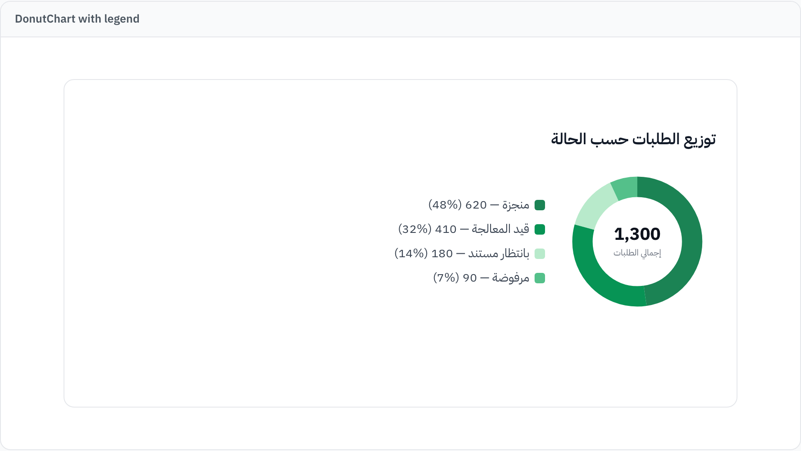
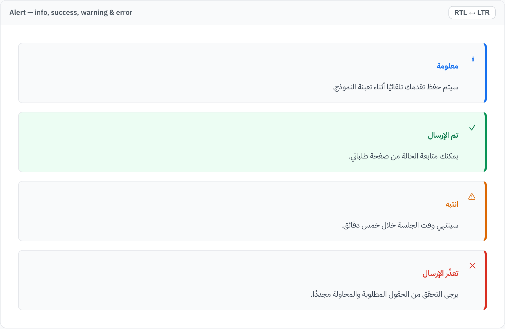
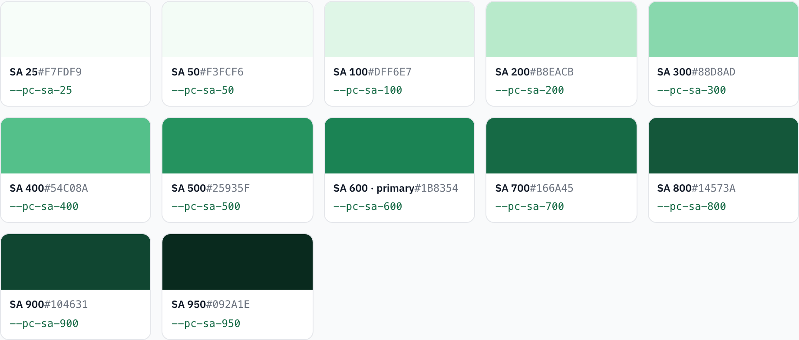
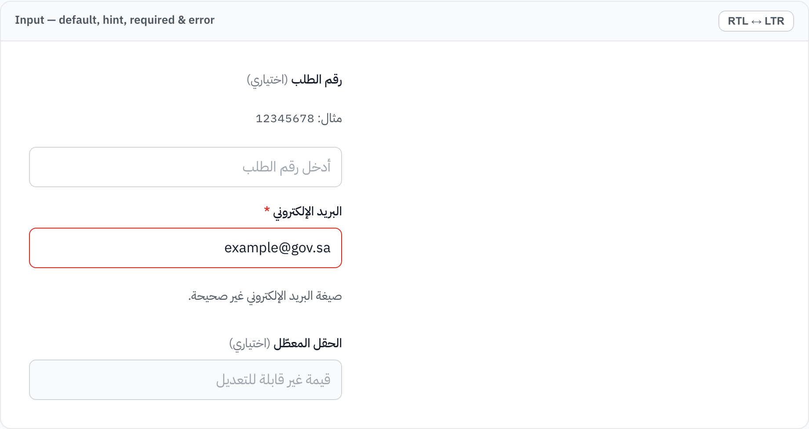
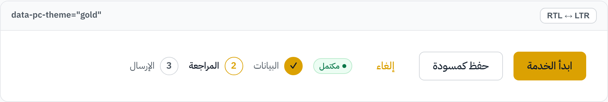

Claude Skill · DGA Platforms Code
Build Saudi government-grade interfaces with confidence
A grounded Claude Skill for designing, auditing, and implementing interfaces aligned with the DGA Platforms Code (كود المنصات): verified design tokens, a dependency-free React component library, Arabic-RTL-first patterns, and accessibility baked in.
Read the overview →Boundary. This skill helps you produce interfaces aligned with DGA Platforms Code principles. It is not an official DGA product and does not assert official compliance or certification. It copies no official logos, code, or fonts, and never touches application backend logic. Always confirm against the official sources and complete a manual review before release.
What is this?
The DGA Platforms Code Skill is a self-contained package that gives Claude Code the grounding to design and review Saudi government-style digital services — service flows, dashboards, forms, verification platforms, and case-management systems. Everything is driven by verified design tokens extracted from the official Platforms Code foundation pages, with no invented values.
Explore the documentation
Purpose, when to activate, the mandatory workflow, and the quality gate.
Trust, service-first, accessibility-first, consistency, and the foundations.
Colors, typography, spacing, and elevation — verified, with live swatches.
Opt-in per-service accent presets (green · gold · lavender) within verified tokens.
Button, Badge, Input, Alert, Card, Stepper, Breadcrumbs, Modal — live.
KPI, line, bar, donut, and chart states — dependency-free SVG.
All 19 operational design rules, grounded in official sources.
Arabic mirroring with logical CSS and WCAG 2.1 AA practices.
Dashboards, forms, results, and service-flow patterns to adapt.
Reusable prompts for audit, redesign, build, convert, and review.
A look at the library
Live previews render throughout the docs; these captures show the verified tokens in action.







Install
The skill is a folder you drop into Claude Code's skills directory. Copy the skill, then ask Claude Code in natural language.
# User-level (all projects)
cp -R claude/skills/dga-platforms-code ~/.claude/skills/
# Or project-level (this repo only)
mkdir -p .claude/skills
cp -R claude/skills/dga-platforms-code .claude/skills/Then prompt, for example:
"Build an Arabic RTL service landing page aligned with DGA Platforms Code."
How it fits together
claude/skills/dga-platforms-code/
├── SKILL.md # Activation rules + mandatory workflow
├── tokens/ # Verified JSON: colors, typography, spacing, elevation
├── components/ # React + plain-CSS library (tokens.css, components.css)
│ └── charts/ # Dependency-free SVG charts
├── references/ # 19 operational design-rule guides
├── templates/ # React + Tailwind page templates
├── examples/ # Product-agnostic service flows
└── prompts/ # Reusable Claude Code prompts